Prokudin-Gorskii collection consists of a sets of three black and white photographs captured using red, green, and blue filters. This assignment is to align these images with minimized visual artifacts.
To make the alignment results contains as few visual artifacts as possible, there are two possible metrics that I have tried:
1. Sum of squared differences (SSD): sum((image1-image2).^2)
2. Normalized cross correlation: dot(image1./||image1||, image2./||image2||)
Here is the performance test result:
ImgAlignSingle.m | ImgAlignMulti.m | ImgAlignMulti.m | |
Test Image | 01087u.tif | 01087v.jpg | 01087v.jpg |
Sum of squared differences | 17.8s | 7.8s | 0.27s |
Normalized cross correlation | 23.6s | 9.3s | 0.35s |
Table 1 Running time of ImgAlignSingle.m and ImgAlignMulti.m
The sum of squared differences is capable metric which can correctly align most of the images and it is very fast.
Search range in aligning small image
In AlignSingle.m, I use exhaustively search over a window of possible displacements and scorc each using SSD metric. However, this method is very slow even in small image with size about 500x500. The search range is main factor which affect the total running time of the algorithm. In order to make the running be reasonable, the range is calculated by:
range = floor(0.05 * min(height, width))
After several tests, 5% of the image height or width can balance the speed and accuracy of alignment.
Percentage | 3% 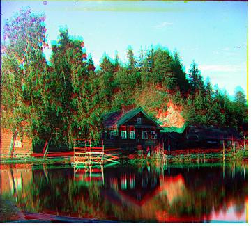 | 4% 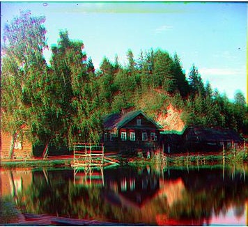 | 5% 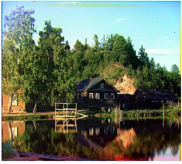 |
Running time | 3.2s | 5.2s | 9.2s |
Table 2: Running time at different search range
Image pyramid
Exhaustive search will become prohibitively expensive if image resolution is too large. (For a 3000x3000 image, the search range is 5% of the height or width which equals 150px. Search with this range is really slow) To avoid this, an image pyramid is needed.
First, we need to create multiple level of pyramid, the number of level is calculated by:
pyramidlevel = ceil(log2(h/100))+1
Each channel of image is blurred by using gaussian filter and subsample at every pyramid level. This produce images with different size. The we search the best displacement vector at every level. After each level of searching, update the starting position for the next search according the current best vector we found. Using the image pyramid, the search range can be a lot smaller than before.
Moreover, I found that the speed can be improved further. At first, I can fix the search range at each level that equals to 10. The speed is still very slow. Then I changed it to 5. The performance is better but I discover that the refine process at lower level of pyramid will not change the displacement vector very much:
Pyramid level | Align Channel G to B | Align Channel R to B |
7 | (1, 0) | (3, 1) |
6 | (2, 1) | (5, 1) |
5 | (5, 2) | (10, 3) |
4 | (9, 3) | (20, 5) |
3 | (19, 6) | (41, 11) |
2 | (38, 12) | (83, 22) |
1 | (77, 24) | (166, 44) |
Table 3: Best displacement vector of different pyramid level (01087u.tif)
Therefore, I reduce the search range down the pyramid level. The performance is a lot better:
Search range | Fixed at 5 | Reduced at every level (7 to 2) |
Running time | 17.3s | 50.1s |
Table 4: Running time with different search range (01087u.tif)
Automatic cropping
To remove white, black or other color borders. This is the method I used to detect the borders or the edge between the border and the image:
1. Convert the image to grayscale
2. Filter the image with Canny Method
3. Detect the edge only the four region of the image (left, right, top, bottom) by counting the white pixel. While searching the border region from outside to inside. If number of white pixel is larger than a certain threshold, this is considered as an border
4. Crop the image according the coordinates searched
5. If the input image is too large, first resize the image to about 500x500
6. This method assume that the border is horizontal or vertical.
7. This algorithm of cropping will leave some color border. But I think it is better than over cropping.
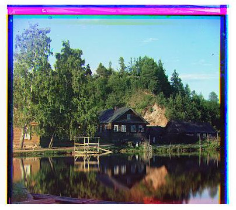 Picture 1: Orignal image | 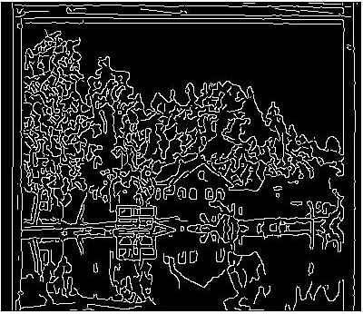 Picture 2: Canny edge of the image | 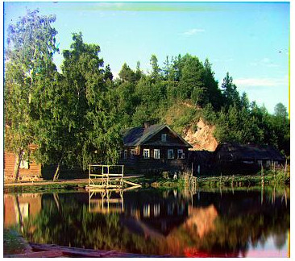 Picture 3: Cropped image |
Automatic contrasting
The input image has 3 color channels. For each color channel, reshape the matrix to 1D array and then sort them all. Pixels which under 0.05% and above 99.95% are removed. The remaining pixels is then rescaled in order to stretch the color range back to 0-255. Then the contrast of final image is improved. Besides, the threshold can be automatically push to maximum using the the function of Matlab.
Calculate metrics using image gradient
Instead of aligning based on RGB similarity, convert the image to gradients before searching displacement vector can improve performance. Image gradient is effective for large image. But if the image has many noises and the size is small, this method will cause some bad alignment.
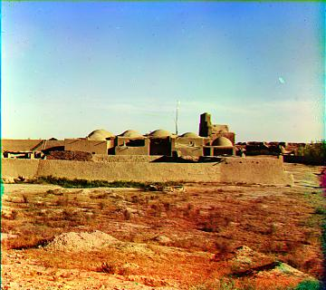
00082v.jpg
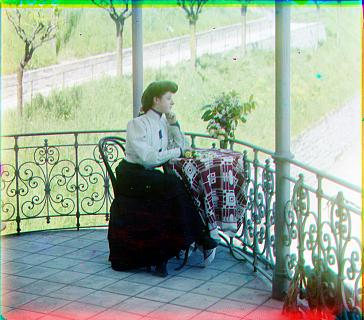
00194v.jpg
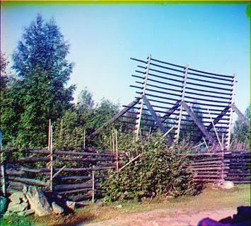
00270v.jpg
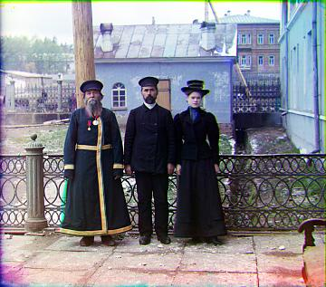
00542v.jpg
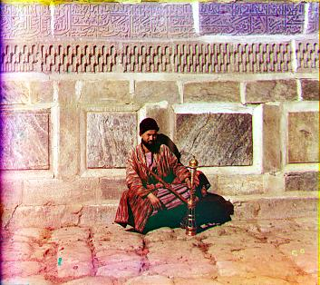
01779v.jpg
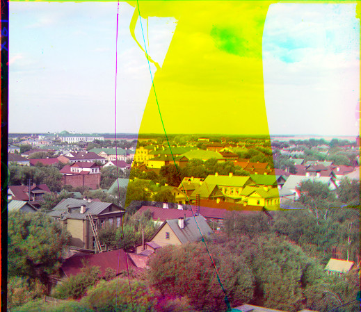
00014u.tif
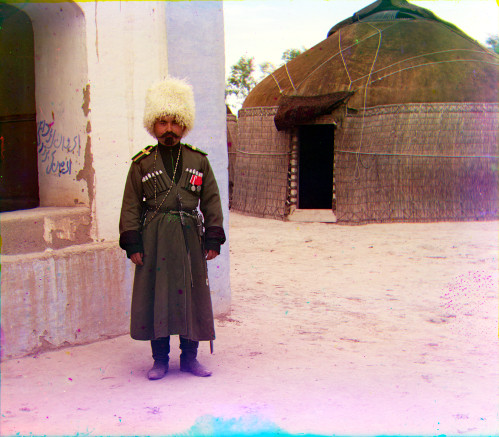
00069u.tif
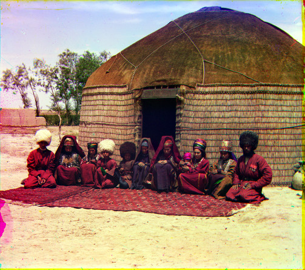
00086u.tif
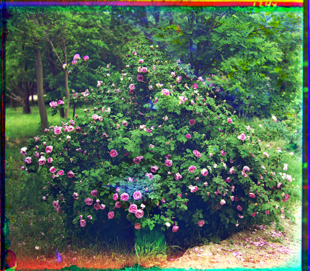
00104u.tif
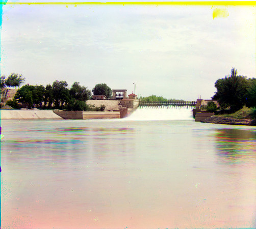
00157u.tif
http://en.wikipedia.org/wiki/Sergey_Prokudin-Gorsky
http://www.mathworks.com/help/images/ref/edge.html
http://www.mathworks.com/help/images/ref/stretchlim.html